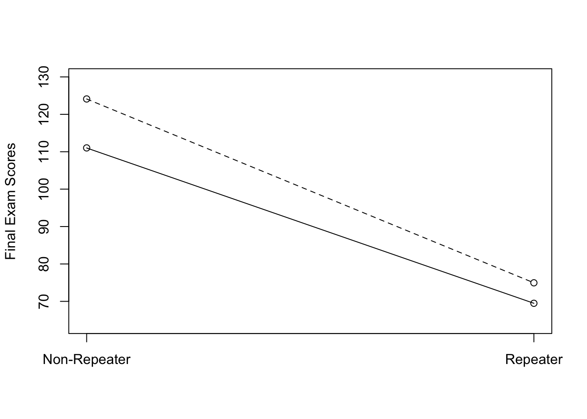
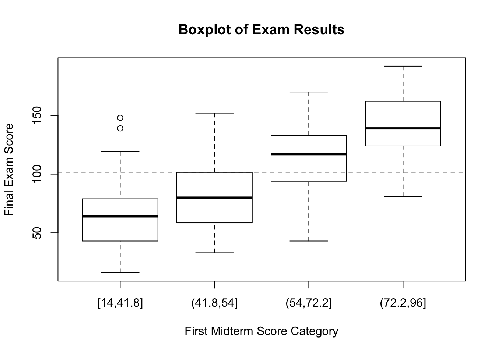
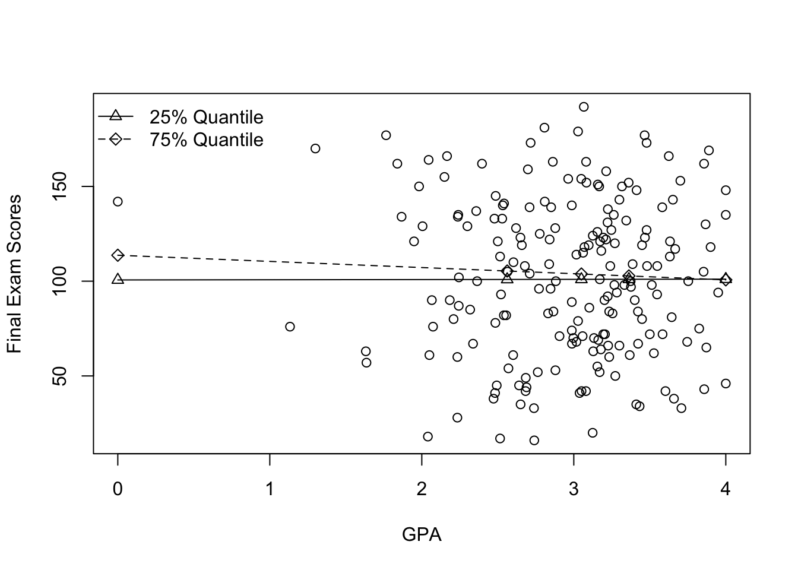
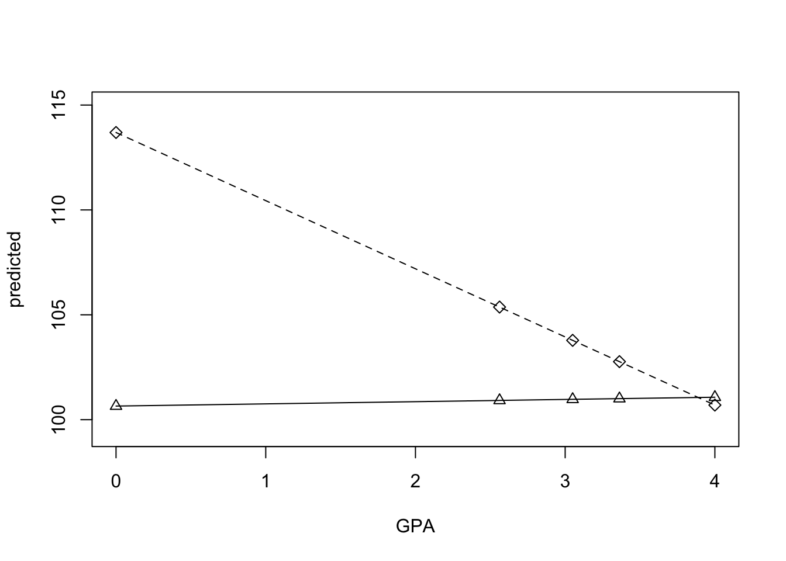

6 Multiple Linear Regression
Multiple linear regression, or simply multiple regression, is a powerful statistical modeling technique that can handle
- independent variables of assorted data types, i.e., ditchotomous, nominal, continuous
- complex relations among the IVs, e.g., nonlinear relations and interaction effects
6.1 Regression Models - The Base Form
6.1.1 Model Specification with Population Parameters
In a simple linear regression model, we use only one independent variable X to predict a continuous dependent variable Y and the prediction model has two parameters, i.e. the intercept and the slope. In this chapter, instead of usign one IV, we will use p IVs, i.e. \(X_1, X_2, \dots, X_p\). As a result, with the population parameters in place, the multiple linear regression model is
\[ Y_i = \mu_i + \varepsilon_i = \beta_0 + \beta_1X_{1i} + \beta_2X_{2i} + \cdots + \beta_pX_{pi} + \varepsilon_i \] where \(i = 1,2,\dots,n\) and \(\mu_i \equiv E(Y_i|\boldsymbol{X}_i)\) is commonly referred to as the mean response model or the prediction model
\[ E(Y_i|\boldsymbol{X}_i) \equiv \mu_i = \beta_0 + \beta_1X_{1i} + \beta_2X_{2i} + \cdots + \beta_pX_{pi} \] and \(\varepsilon_i\) is called the error and
\[\varepsilon_i \overset{iid}{\text{~}} N(0,\sigma^2)\]
To note, the population parameters of this linear model are \(\beta_0, \beta_1, \dots, \beta_p\) and \(\sigma\).
6.1.2 Model Specification with Sample Parameters
Accordingly, using the sample parameters, the multiple linear regression model is
\[ Y_i = \hat{Y}_i + e_i = b_0 + b_1X_{1i} + b_2X_{2i} + \cdots + b_pX_{pi} + e_i \] where \(i = 1,2,\dots,n\) and the prediction model is
\[ \hat{Y}_i = b_0 + b_1X_{1i} + b_2X_{2i} + \cdots + b_pX_{pi} \] and \(e_i\) is called the residual and
\[ e_i \overset{iid}{\sim} N(0,s^2)\]
To note, \(b_0, b_1, \dots, b_p\) and \(s^2\) are parameters estimated from a given sample to approximate the unknown and constant population parameters \(\beta_0, \beta_1, \dots, \beta_p\) and \(\sigma\).
6.2 The Ordinary Least-Squres Method
Similar to the case of simple linear regression, the ordinary least squares (OLS) method can also be applied to estimate sample parameters for multiple linear regression.
\[ SSR = \sum_{i=1}^n R_i^2 = \sum_{i=1}^n (Y_i-\hat{Y}_i)^2 = \sum_{i=1}^n (Y_i - (b_0 + b_1X_{1i} + b_2X_{2i} + \cdots + b_pX_{pi}))^2 \]
The solutions for \(b_j\), \(j = 1,2,\dots,p\), should minimize \(SSR\), hence the name least-squares method.
6.2.1 Interpretations of Regression Coefficients
Given the following mean response model,
\[ \hat{Y}_i = b_0 + b_1X_{1i} + b_2X_{2i} + \cdots + b_pX_{pi} \]
- intercept \(b_0\): The expected value (i.e., mean) of Y when all IVs are zero.
- slope \(b_i\): Holding other IVs constant, increase in \(X_i\) by 1 unit corresponds to an average of \(b_i\) units of increase in Y.
6.2.2 Residual Variance
The residual variance (aka conditional variance) is given as follows.
\[ s^2 = MSR = \frac{\sum R_i^2}{df} = \frac{\sum_{i=1}^n (Y_i-\hat{Y_i})^2}{df} = \frac{\sum_{i=1}^n (Y_i - (b_0 + b_1X_{1i} + b_2X_{2i} + \cdots + b_pX_{pi}))^2}{n-(1+p)} \]
It should be clear that \(1+p\) is the number of parameters required to estimate \(\hat{Y}_i\) (i.e., the degrees of freedom we have to spend or give up for fitting the model), which equals \(p\) slope parameters plus 1 for the intercept. The denominator \(n-(1+p)\) is the degrees of freedom that are left for us after fitting the model.
As a result, \(s\) is called the residual standard deviation or conditional standard deviation or RMSE.
6.3 Standard Errors of Regression Coefficients
As explained previously, we are usually only interested in the standard error of a slope. Let \(b_j\) denote the slope parameter for the jth feature \(X_j\) where \(j = 1,2,\dots,p\). We have
\[ s_{b_j}^2 = \frac{s^2}{\text{SSX}_j} \cdot \text{VIF}_j = \frac{s^2}{(n-1) Var(X_j)} \cdot \text{VIF}_j \] where \(s^2\) is the residual variance, \(\text{SSX}_j = \sum_{i=1}^m (X_{ij}-\bar{X}_j)^2\) is the sum of squares for \(X_j\), and \(\text{VIF}_j\) is an important concept called variance inflation factor.
6.3.1 Variance Inflation Factor
To compute VIF for \(X_j\), use the following equation.
\[ \text{VIF}_j = \frac{1}{1-R_j^2} \] where \(R_j^2\) is the R-squared of regressing \(X_j\) on all the other IVs except for \(X_j\). To be clear, the VIF of \(X_j\) can be computed in three steps.
- Step 1: For \(X_1,X_2,\dots,X_p\), regress \(Y_j\) on the rest of the IVs: There are only \(p-1\) features and \(Y\) is completely ignored.
\[ X_j = a_0 + a_1X_1 + a_2X_2 + \cdots + a_pX_p \]
Step 2: Compute the \(R^2\) for this regression model, which results in \(R_j^2\).
Step 3: Compute VIF based on the formula given above.
6.3.2 Significance of VIF
Remember that \(R^2\) is interpreted as the proportion of variance explained by the IVs and \(1-R^2\) is the proportion of unexplained variance. It should be clear that when \(X_j\) highly correlates with other features, \(R_j^2\) would be high and \(1-R_j^2\) would be low and hence \(VIF_j\) tends to be high. In fact, when \(X_j\) does not correlate with any other features, i.e., \(R_j^2 = 0\), we will have \(VIF_j = 1\), which would give the smallest possible standard error for \(b_j\), as shown in the following equation. To note, this is the same formula for the standard error of \(b_j\) in simple linear regression.
\[ s_{b_j}^2 = \frac{s^2}{\text{SSX}_j} \cdot \text{VIF}_j = \frac{s^2}{\text{SSX}_j} \] In contrast, if \(X_j\) highly correlates with some other features such that the \(R_j^2 = 0.90\), i.e., 90% of the variance in \(X_j\) can be explained by the other features, then \(VIF_j = 10\). In other words, the standard error of \(b_j\) derived from multiple linear regression would be inflated 10 times as compared to the standard error of \(b_j\) that we would have got from a simple linear regression model where \(X_j\) is the sole predictor.
6.3.3 Multicollinearity
This previous example illustrates how the term VIF gets its name variance inflation factor and the phenonemon of variance inflation due to presence of highly correlated featuers is called multicollinearity. As a rule of thumb, multicollinearity is usually not regarded as an issue unless VIF is greater than 10.
Another point worth noticing is that, since in most situations, a given feature will always correlate with some other features, IVs or features in the context of multiple linear regression are also called covariates (since features co-vary), which is particularly true for continuous features.
6.3.4 Influencing Factors on Standard Errors
With the meaning of VIF explained, we can now discuss the factors affecting the standard error of the slope parameter \(b_j\) for the covariate \(X_j\).
\[ s_{b_j}^2 = \frac{s^2}{\text{SSX}_j} \cdot \text{VIF}_j = \frac{s^2}{(n-1) Var(X_j)} \cdot \frac{1}{1-R_j^2} \]
- \(s^2\): Better model fit leads to smaller standard errors, or greater scatter in data around the regression line leads to more uncertainties in slope parameter estimations.
- \(n\): Larger sample size results in smaller standard errors.
- \(Var(X_j)\): Greater instrinsic variability in a covariate yields smaller standard errors.
- \(R_j^2\): Features that highly correlate with other features might associate with large standard errors.
6.4 \(R^2\) and ANOVA for Multiple Regression
When dealing with simple linear regression, we have already studied how to derive the ANOVA table, compute the \(R^2\) and perform the \(F\) test. The same results also hold here, which will not be repeated except for one point. The formula for computing \(R^2\) is
\[ R^2 = \frac{\text{SSM}}{\text{SST}} = \frac{ \sum(\hat{Y}_i-\bar{Y})^2 }{ \sum(Y_i-\bar{Y})^2 } \]
In the context of multiple regression, the statistic \(R^2\) is called the coefficient of determination of the linear model, and the square root of \(R^2\) is called the multiple correlation coefficient, which interestingly enough is the correlation between observed values \(Y_i\) and predicted values \(\hat{Y}_i\).
R_Proof: Multiple Correlation Coefficient
tdat = na.omit(xdat[c("mid3","satmath","satreading","gpa")])
mod1 = lm(mid3 ~ satmath + satreading + gpa, data=tdat)
yhat = predict(mod1)
ybar = mean(tdat$mid3, na.rm=T)
ssm = sum((yhat-ybar)^2, na.rm=T)
sst = sum((tdat$mid3-ybar)^2, na.rm=T)
r2 = ssm/sst
r = cor(tdat$mid3, yhat)
c(sqrt(r2), r)## [1] 0.07316646 0.073166466.5 Regression Models Extended - Categorical Features
6.5.1 Dummy Variables
A dummy variable has only two unique levels. For comparison purposes, we would designate one level as the reference level and code it as 0, whereas the other level is coded as 1. Since 1 is usually used to indicate the presence of something of interest, a dummy variable is also called a indicator variable.
When a dummy variable is the only feature in a linear regression model, it gives identical results to a two-sample t-test. To see how this is true, let’s use a concrete example, where we regress final exam scores on gender to see if males outperformed females in a Chemistry class. Let us use M to indicate a dummy variable, where M=0 for females and M=1 for males. The prediction model would be as follows.
\[ \hat{Y}_i = b_0 + b_1M_i \] Three points can be inferred from this equation:
- When \(M_i = 0\), the group average for females is \(\hat{Y}_i=b_0\).
- When \(M_i = 1\), the group average for males is \(\hat{Y}_i=b_0+b_1\).
- The interpretation of \(b_1\) is that 1 unit increase in \(M_i\), i.e., changing from female to male, \(\hat{Y}_i\) on average would increase by \(b_1\).
Putting together, it should be clear that (a) \(b_0\) is the group mean for females, (b) \(b_0+b_1\) is the group mean for males, and (c) \(b_1\) is the difference in group means.
R_Proof: Regression vs Two-sample T-test
# two-sample t-test with equal variance
tt = t.test(mid3 ~ gender, data=xdat, var.equal=TRUE)
# simple linear regression with a dummy feature
mod = lm(mid3 ~ gender, data=xdat)
modsum = summary(mod)
modsum$coefficients## Estimate Std. Error t value Pr(>|t|)
## (Intercept) 98.426230 3.720447 26.455485 1.282478e-65
## genderMale 8.830913 6.161646 1.433207 1.534421e-01c(diff(tt$estimate), tt$statistic, tt$p.value)## mean in group Male t
## 8.8309133 -1.4332070 0.1534421r2 = modsum$r.squared
r = cor(xdat$mid3, as.numeric(xdat$gender)-1, use="pair")
c(r2, r^2)## [1] 0.01069533 0.010695336.5.2 Nominal Variables
In regression analysis, a nominal variable is routinely converted into a set of dummy features, designate one level/feature as the reference level, and put the rest of the levels/features into the regression model. To illustrate this, let’s regress final exam scores on year to examine if students from different years performed differently. There are three sessions (i.e., years) in the dataset. Let’s use S1, S2, and S3 to denote the first, second, and third sessions, and designate S1 as the reference level. The prediction model would be as follows.
\[ \hat{Y}_i = b_0 + b_1S_{2i} + b_2S_{3i} \] To note, since the dummy feature S1 is used as the reference level, it is absent as a feature from the equation. Moreover, the three dummy variables are mutually exlucsive, e.g., when S1=1, S2 and S3 have to be zero. Three points can be inferred from this equation:
- When \(S_{1i} = 1\), the group average for students from the first session is \(\hat{Y}_i=b_0\).
- When \(S_{2i} = 1\), the group average for students from the second session is \(\hat{Y}_i=b_0+b_1\).
- When \(S_{3i} = 1\), the group average for students from the third session is \(\hat{Y}_i=b_0+b_2\).
Putting together, it should be clear that (a) \(b_1\) is the difference in group means between the second and first sessions, and (b) \(b_2\) is the difference in group means between the third and first sessions. If there are more sessions up to p levels, then \(b_3,b_4,\dots,b_p\) would be difference in group means between each of these levels and the first session. Everything is compared to the first session, which is why it is termed as the reference level or base level or reference group.
When a nominal variable is converted into a set of dummies and used as the only feature in a linear regression model, it gives identical results to the one-way ANOVA.
R_Proof: Regression vs ANOVA
# one-way ANOVA
aovmod = aov(mid3 ~ session, data=xdat)
aovsum = summary(aovmod)
aovsum## Df Sum Sq Mean Sq F value Pr(>F)
## session 2 114 56.8 0.033 0.967
## Residuals 189 324206 1715.4
## 8 observations deleted due to missingness# simple linear regression with a nominal feature
mod = lm(mid3 ~ session, data=xdat)
anova(mod)## Analysis of Variance Table
##
## Response: mid3
## Df Sum Sq Mean Sq F value Pr(>F)
## session 2 114 56.81 0.0331 0.9674
## Residuals 189 324206 1715.38modsum = summary(mod)
modsum##
## Call:
## lm(formula = mid3 ~ session, data = xdat)
##
## Residuals:
## Min 1Q Median 3Q Max
## -86.620 -32.910 -0.779 32.221 89.380
##
## Coefficients:
## Estimate Std. Error t value Pr(>|t|)
## (Intercept) 100.571 5.535 18.171 <2e-16 ***
## sessionSS10 2.049 8.058 0.254 0.800
## sessionSS11 1.208 7.112 0.170 0.865
## ---
## Signif. codes: 0 '***' 0.001 '**' 0.01 '*' 0.05 '.' 0.1 ' ' 1
##
## Residual standard error: 41.42 on 189 degrees of freedom
## (8 observations deleted due to missingness)
## Multiple R-squared: 0.0003503, Adjusted R-squared: -0.01023
## F-statistic: 0.03312 on 2 and 189 DF, p-value: 0.9674modsum$fstatistic## value numdf dendf
## 0.0331181 2.0000000 189.0000000Let’s create a nominal feature with three levels (i.e., ‘a’,‘b’,‘c’) and use the model.matrix() function in R to generate a set of dummy features.
xvec = gl(3, 2, labels=c("a","b","c"))
tdat = data.frame(xvec)
tdat## xvec
## 1 a
## 2 a
## 3 b
## 4 b
## 5 c
## 6 cmodel.matrix(~xvec, data=tdat)## (Intercept) xvecb xvecc
## 1 1 0 0
## 2 1 0 0
## 3 1 1 0
## 4 1 1 0
## 5 1 0 1
## 6 1 0 1
## attr(,"assign")
## [1] 0 1 1
## attr(,"contrasts")
## attr(,"contrasts")$xvec
## [1] "contr.treatment"Notice that (a) a column of 1s is automatically created, and (b) the first level ‘a’ is missing from the results.
model.matrix(~xvec-1, data=tdat)## xveca xvecb xvecc
## 1 1 0 0
## 2 1 0 0
## 3 0 1 0
## 4 0 1 0
## 5 0 0 1
## 6 0 0 1
## attr(,"assign")
## [1] 1 1 1
## attr(,"contrasts")
## attr(,"contrasts")$xvec
## [1] "contr.treatment"6.6 Regression Models Extended - Interaction Effects
The interaction effects are also called moderation effects, which are critically important in regression analysis. It is the idea that the effect of X on Y is moderated by Z. For example, we might be interested in the effect of study time X on course performance Y. It is conceivable that the way study time affects exam results might depend on whether the time is spent willingly Z.
- If students are forced to spend a lot of time studying, then the more time spent may or may not translate to stronger performance.
- If students are willingly investing time in a course, more time spent should have a much stronger effect on exam performance.
6.6.1 Dummy-Dummy Interactions
In our dataset, let’s consider the effect of repeater status R (i.e., repeater=1) on final exam scores Y moderated by gender Male (i.e., male=1).
\[ \hat{Y}_i = b_0 + b_1\cdot\text{R} + b_2\cdot\text{Male} + b_3\cdot\text{R}\cdot\text{Male} \]
For \(Male=0\) (i.e., females), we have
\[ \hat{Y}_i = b_0 + b_1\cdot\text{R} \]
which shows (a) that the average score for female non-repeaters is \(b_0\) and (b) that females enjoyed an average of \(b_1\) points increase when switching from non-repeater to repeater status.
For \(Male=1\) (i.e., males), we have
\[ \hat{Y}_i = b_0 + b_1\cdot\text{R} + b_2 + b_3\cdot\text{R} = (b_0+b_2) + (b_1+b_3)\cdot\text{R}\]
which shows (a) that the average score for male non-repeaters was \(b_2\) points higher than that for female non-repeaters and (b) that for the same switch from non-repeater to repeater status, males enjoyed an additional \(b_3\) points increase as compared to the score gain for females making the same status switch.
Now let’s fit a linear regression model and examine the coefficients.
mod = lm(mid3 ~ repeater*gender, data=xdat)
modsum = summary(mod)
modsum##
## Call:
## lm(formula = mid3 ~ repeater * gender, data = xdat)
##
## Residuals:
## Min 1Q Median 3Q Max
## -91.109 -26.337 2.514 24.455 80.976
##
## Coefficients:
## Estimate Std. Error t value Pr(>|t|)
## (Intercept) 111.024 3.861 28.752 < 2e-16 ***
## repeaterRepeater -41.537 7.012 -5.924 1.47e-08 ***
## genderMale 13.085 6.516 2.008 0.0461 *
## repeaterRepeater:genderMale -7.613 11.381 -0.669 0.5043
## ---
## Signif. codes: 0 '***' 0.001 '**' 0.01 '*' 0.05 '.' 0.1 ' ' 1
##
## Residual standard error: 35.6 on 188 degrees of freedom
## (8 observations deleted due to missingness)
## Multiple R-squared: 0.2653, Adjusted R-squared: 0.2536
## F-statistic: 22.63 on 3 and 188 DF, p-value: 1.488e-12The visualize a dummy-continuous interaction effect, fit a simple linear regression model between X and Y conditioned on Z.
newdat = expand.grid(mod$xlevels)
newdat$yhat = predict(mod, newdat)
yrange = range(newdat$yhat)
yrange = yrange + c(-1,1)*diff(yrange)*0.1
plot(1:2, newdat$yhat[1:2], ylim=yrange, type="o",
xaxt="n", ylab="Final Exam Scores", xlab=NA)
axis(1, at=1:2, labels=levels(newdat[,1]))
points(1:2, newdat$yhat[3:4], type="o", pty=2, lty=2)
6.6.2 Dummy-Continuous Interactions
In our dataset, let’s consider the effect of high school GPA X on final exam scores Y moderated by repeater status R.
\[ \hat{Y}_i = b_0 + b_1\cdot\text{GPA} + b_2\cdot\text{R} + b_3\cdot\text{GPA}\cdot\text{R} \]
For \(R=0\) (i.e., non-repeaters), we have
\[ \hat{Y}_i = b_0 + b_1\cdot\text{GPA} \]
which shows that (a) a non-repeater with 0 highschool GPA got an average of \(b_0\) points in the final exam, and (b) that the average effect of 1 point increase in GPA on exam performance is \(b_1\) points for non-repeaters.
For \(R=1\) (i.e., repeaters), we have
\[ \hat{Y}_i = b_0 + b_1\cdot\text{GPA} + b_2 + b_3\cdot\text{GPA} = (b_0+b_2) + (b_1+b_3)\cdot\text{GPA}\]
which shows that (a) repeaters with 0 highschool GPA would on average get \(b_2\) points higher on the final exam, and (b) that the average effect of 1 point increase in GPA on exam performance is \(b_1+b_3\) for repeaters. Hence, for the same 1 point increase in GPA, repeaters enjoyed an extra \(b_3\) points increase in the final exam as compared to the \(b_1\) points gain in final scores for non-repeaters.
The visualize a dummy-continuous interaction effect, fit a simple linear regression model between X and Y conditioned on Z.
car::scatterplot(mid3 ~ gpa*repeater, data=xdat)
In R, interaction effect between X and Z is represented by X*Z. To note, whenever an interaction effect (e.g., X*Z) is added to a linear model, the component variables involved (e.g., X and Z) will be automatically added to the linear model as well. In other words, the following two linear models give identical results.
lm(mid3 ~ repeater*gpa, data=xdat)
lm(mid3 ~ repeater + gpa + repeater*gpa, data=xdat)
Now let’s fit a linear regression model and examine the coefficients.
mod = lm(mid3 ~ repeater*gpa, data=xdat)
modsum = summary(mod)
modsum##
## Call:
## lm(formula = mid3 ~ repeater * gpa, data = xdat)
##
## Residuals:
## Min 1Q Median 3Q Max
## -83.477 -26.153 4.577 24.992 77.077
##
## Coefficients:
## Estimate Std. Error t value Pr(>|t|)
## (Intercept) 129.451 15.230 8.499 5.79e-15 ***
## repeaterRepeater -99.104 29.478 -3.362 0.000938 ***
## gpa -4.738 5.107 -0.928 0.354678
## repeaterRepeater:gpa 18.394 9.668 1.903 0.058618 .
## ---
## Signif. codes: 0 '***' 0.001 '**' 0.01 '*' 0.05 '.' 0.1 ' ' 1
##
## Residual standard error: 35.67 on 188 degrees of freedom
## (8 observations deleted due to missingness)
## Multiple R-squared: 0.2624, Adjusted R-squared: 0.2507
## F-statistic: 22.3 on 3 and 188 DF, p-value: 2.135e-126.6.3 Continuous-Continuous Interactions
Let’s consider the effect of highschool GPA on final exam scores Y moderated by perceived usefulness of the course U.
\[ \hat{Y}_i = b_0 + b_1\cdot\text{GPA} + b_2 \cdot U + b_3\cdot\text{GPA} \cdot U \]
When \(U=0\), we have
\[ \hat{Y}_i = b_0 + b_1\cdot\text{GPA} \]
When \(U=1\), we have
\[ \hat{Y}_i = (b_0 +b_2) + (b_1+b_3)\cdot\text{GPA} \]
At this point, the interpretations of the coefficients are very similar to those we have encountered in the case of dummy-continuous interactions. To be noted, if we use \(U\) and \(U+1\) instead of using \(U=0\) and \(U=1\), we would end up with very similar interpretations: (a) 1 unit increase in perceived course usefulness would result in \(b_0\) points increase in final exam scores for students with 0 GPA, and (b) 1 unit increase in perceived course usefulness would enhance the effect of GPA by \(b_3\) points per 1 unit increase in GPA.
mod = lm(mid3 ~ gpa*utcourse, data=xdat)
modsum = summary(mod)
modsum##
## Call:
## lm(formula = mid3 ~ gpa * utcourse, data = xdat)
##
## Residuals:
## Min 1Q Median 3Q Max
## -88.790 -31.017 1.257 30.518 91.027
##
## Coefficients:
## Estimate Std. Error t value Pr(>|t|)
## (Intercept) 48.479 57.140 0.848 0.397
## gpa 13.523 19.300 0.701 0.484
## utcourse 13.042 12.221 1.067 0.287
## gpa:utcourse -3.354 4.090 -0.820 0.413
##
## Residual standard error: 41.6 on 171 degrees of freedom
## (25 observations deleted due to missingness)
## Multiple R-squared: 0.01214, Adjusted R-squared: -0.005192
## F-statistic: 0.7004 on 3 and 171 DF, p-value: 0.553xs = quantile(xdat$gpa, na.rm=TRUE)
ys = quantile(xdat$utcourse, na.rm=TRUE, probs=c(0.25, 0.75))
newdat = expand.grid(xs,ys)
colnames(newdat) = c("gpa","utcourse")
newdat$yhat = predict(mod, newdat)
yrange = range(newdat$yhat)
yrange = yrange + c(-1,1)*diff(yrange)*0.1
plot(xdat$gpa, xdat$mid3,xlab="GPA", ylab="Final Exam Scores")
points(newdat$gpa[1:5], newdat$yhat[1:5], type="o", pch=2)
points(newdat$gpa[6:10], newdat$yhat[6:10], type="o", pch=5, lty=2)
legend("topleft", legend=c("25% Quantile","75% Quantile"), bty="n", pch=c(2,5), lty=c(1,2))
To note, do not plot only the fitted lines without the actual data points.
plot(newdat$gpa[1:5], newdat$yhat[1:5], ylim=yrange, type="o",
xlab="GPA", ylab="predicted", pch=2)
points(newdat$gpa[6:10], newdat$yhat[6:10], type="o", pch=5, lty=2)